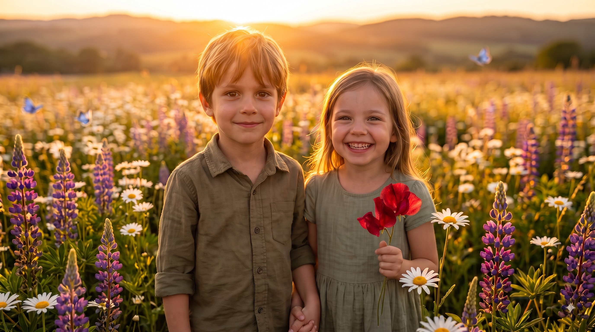

Story
Content Summary
소녀는 소중한 이의 무덤 앞에서 그 때의 즐거웠던 추억을 놓지 못하고 계속 슬퍼하고 있었습니다. 소년은 그런 소녀를 보고 위로를 하기 위해 다가옵니다.
슬픔의 장소(해가 보이지 않는 나무숲)에서 벗어나기 위해 소년은 소녀를 이끌어 나아갑니다. 소년과 소녀의 위로 비가 점점 그치며, 햇빛이 따뜻하게 내려오고, 광활하고 아름다운 꽃밭이 소년과 소녀를 맞이합니다.
소년은 자신이 가지고 있던 붉은 돌을 주고, 소녀도 가지고 있던 붉은 스위트피 꽃을 주며 서로 즐거운 추억을 만들었다는 것을 보여줍니다.
